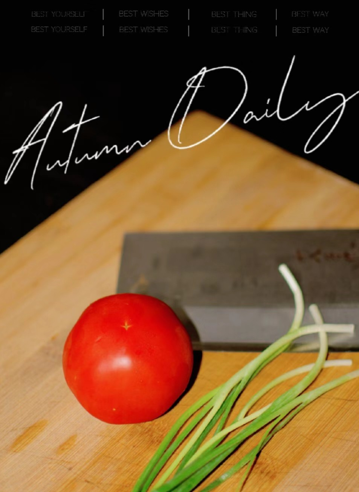
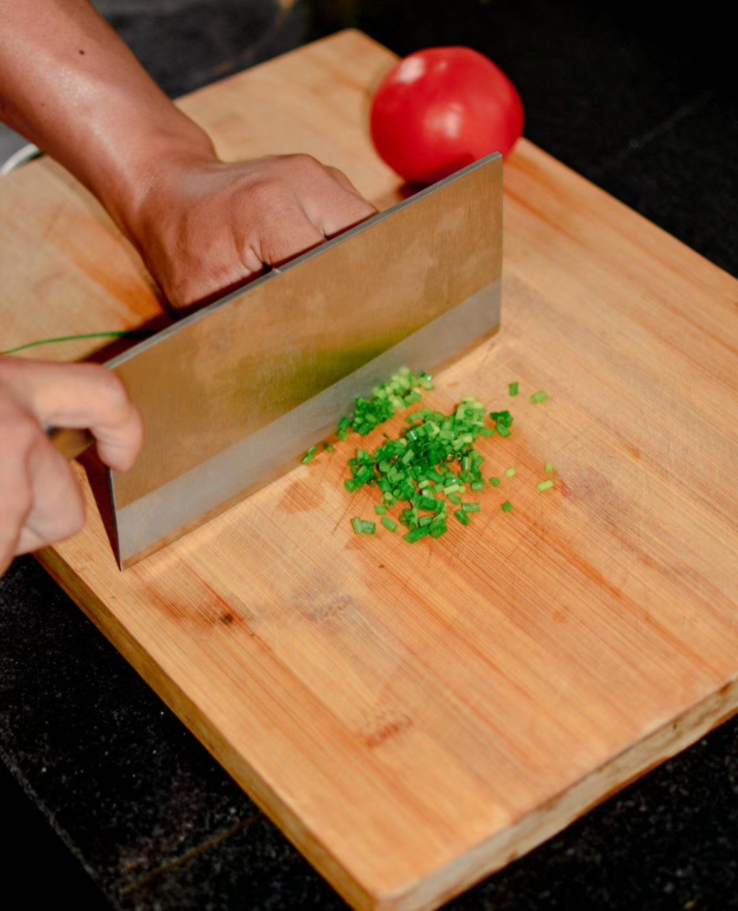
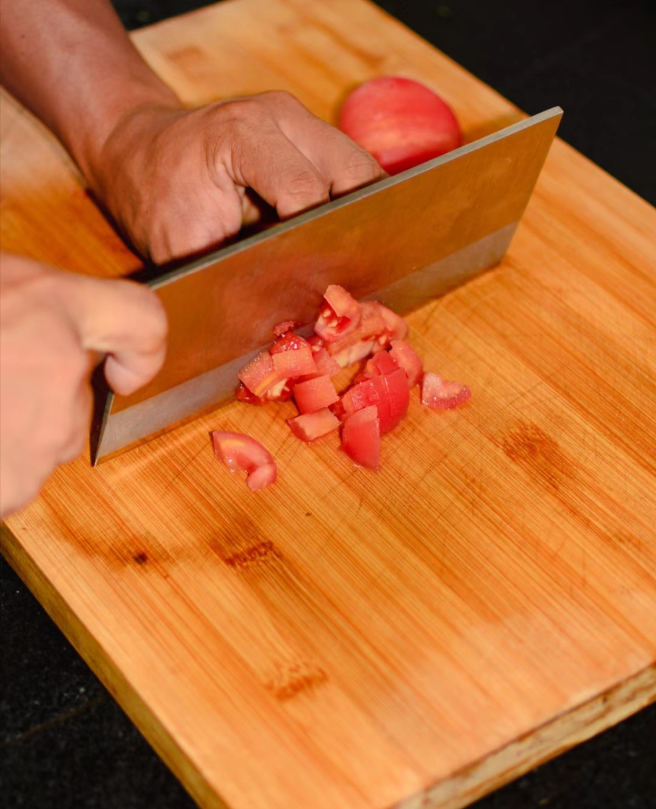
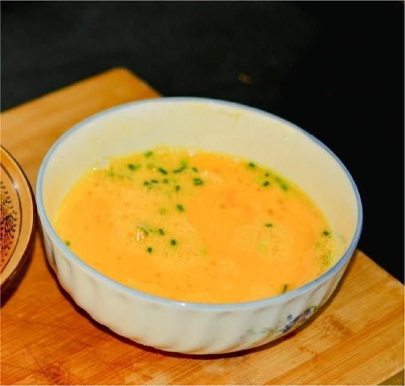
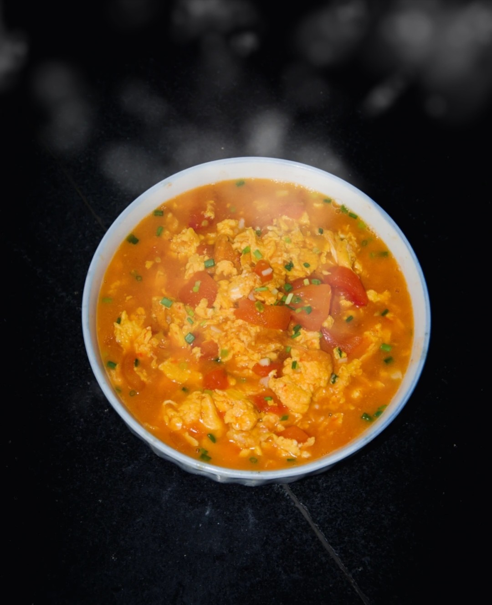

1.备好材料:番茄、鸡蛋和小葱

2.切好小葱

3.切好番茄

4.打好鸡蛋
现在起锅开始:油可以稍多一点，热锅下油，锅中油冒烟开始滑入蛋液，让每一处蛋液成型过熟，即可搅拌成小块出锅（根据自己喜好而定）
然后锅中还有些底油，不用洗锅，不用再次倒油
加入蒜末爆香，依次倒入番茄块翻炒，尽量多炒一会，锅中快糊时，再加入清水，水量没过番茄
盖上锅盖小焖一会，番茄半熟时倒入鸡蛋，这时下入调料 盐 鸡精 味精 耗油适量 还可以加入少许白糖提鲜（不喜欢的只放盐都可以）
盖上锅盖再小焖一会，出锅前，可以加入少许香油，出锅后撒上一把葱花就完成了

下一个在这->青椒肉丝